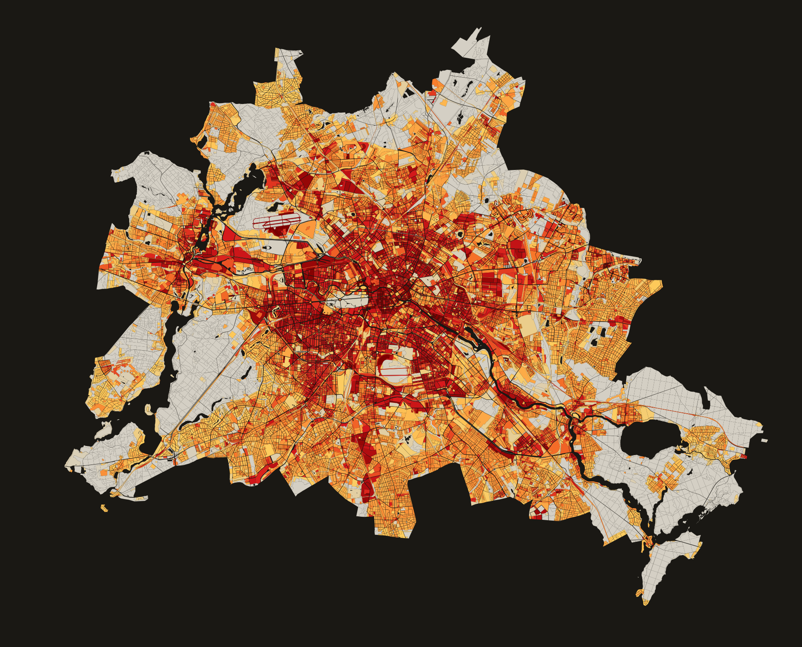
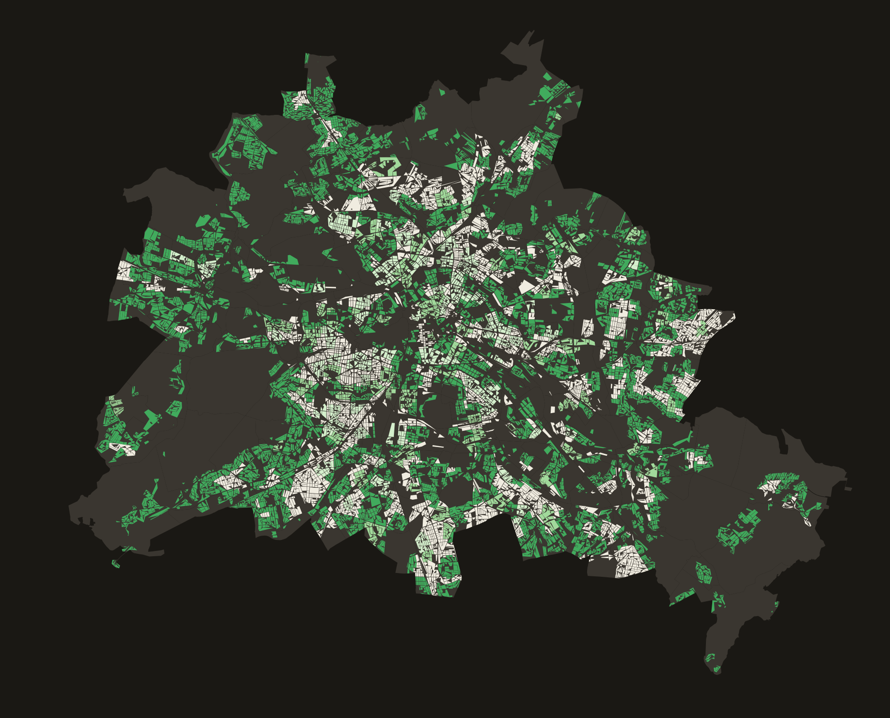

Berlin im Klimawandel
Hitze in der Stadt ist nicht gleichmäßig verteilt. Sie trifft diejenigen am stärksten, die ihr am wenigsten ausweichen können – und die am wenigsten Grün in ihrer Nachbarschaft haben.
An Sommertagen mit über 35 Grad unterscheiden sich Berliner Stadtteile um bis zu 10 Grad Celsius. Der Prenzlauer Berg kühlt sich nachts in seinen begrünten Innenhöfen deutlich stärker ab als das dicht versiegelte Neukölln-Nord. Und die Bewohnerinnen von Spandau-West, eingekesselt zwischen Bundesstraßen und Plattenbau, haben statistisch gesehen weniger Zugang zu Grünflächen als jene in Dahlem oder Grunewald.
Doch ist dieser Zusammenhang zufällig – oder folgt das Grün tatsächlich dem Geld? Und wenn ja: Verschärft sich diese Ungleichheit in dem Maß, wie Gentrifizierungsprozesse die Sozialstruktur der Stadt umschichten?
„Stadtplanung kann die Lufttemperatur nicht direkt steuern. Aber sie entscheidet, wo Bäume gepflanzt werden – und wo nicht." — Eigene These
Diese Analyse verbindet drei Datenschichten: das Klimamodell Berlin, die Grünvolumenzahlen des Umweltatlas sowie das Monitoring Soziale Stadtentwicklung des Berliner Senats. Ziel ist es, räumliche Überlappungen von Hitzebelastung, Grünarmut und sozialer Benachteiligung sichtbar zu machen.
Städte heizen sich aus einem einfachen Grund stärker auf als ihr Umland: Asphalt, Beton und Gebäudemassen speichern tagsüber Wärme und geben sie nachts langsam wieder ab. Gleichzeitig fehlt die Verdunstungskühlung, die unversiegelte Böden und Vegetation leisten.
Asphalt und Beton absorbieren bis zu 90 % der Sonnenstrahlung und geben sie als Wärme ab. In stark versiegelten Gebieten liegen Oberflächentemperaturen im Sommer bis zu 40 °C über denen begrünter Flächen. Berlinweit variiert der Versiegelungsgrad erheblich: Die dichte Gründerzeit-Innenstadt liegt oft bei über 80 %, während Randgebiete mit Einzelhausbebauung und Grünanlagen deutlich darunter fallen.

Quelle: Versiegelung der Blockteilflächen 2021, Umweltatlas Berlin.
Bäume kühlen durch Verdunstung und Beschattung. Ein einzelner Stadtbaum kann an einem Sommertag die Kühlwirkung von mehreren Klimaanlagen ersetzen. Für die Bewohnerinnen der Stadt ist dabei zweierlei relevant: das Grünvolumen – der gesamte Vegetationsbestand inkl. privater Gärten und Hinterhöfe, der lokal kühlt – und die Grünversorgung, also der Zugang zu öffentlichen Grünflächen im Gehwegbereich. Die Karte zeigt Letzteres: wie viel m² öffentliche Grünfläche pro Einwohner im 500-m-Gehwegnetz erreichbar sind.

Quelle: Versorgung mit wohnungsnahen Grünanlagen 2020, Umweltatlas Berlin. m² öffentlicher Grünfläche pro Einwohner im 500-m-Gehwegnetz.
Der Index PET (Physiologisch Äquivalente Temperatur) bewertet Hitze aus Körperperspektive – unter Einbeziehung von Strahlung, Luftfeuchtigkeit und Wind. In den am stärksten belasteten Berliner Planungsräumen übersteigt der mittlere PET-Wert an Sommernachmittagen 38 °C, was medizinisch als „sehr starke Wärmebelastung" gilt – vergleichbar mit einem Aufenthalt in der prallen Sonne ohne Schatten an einem windstillen Sommertag. Zwischen dem heißesten und kühlsten Planungsraum liegen 13,4 °C – eine Differenz, die nicht zufällig im Raum verteilt ist.
Wer in einer grünarmen, stark versiegelten Nachbarschaft wohnt, hat statistisch gesehen häufig auch weniger Ressourcen, dieser Situation auszuweichen: kein Haus mit Garten, kein Urlaub im Sommer, keine Klimaanlage. Die Fähigkeit, sich vor Hitze zu schützen, ist ungleich verteilt – und diese Ungleichheit reproduziert sich räumlich.
Die folgenden interaktiven Karten machen diese drei Dimensionen einzeln und in Kombination sichtbar: wo in Berlin die Hitze am stärksten ist, wo es am wenigsten Grün gibt – und wo beides mit sozialer Benachteiligung zusammenfällt.
Alle Daten stammen aus öffentlich zugänglichen Berliner Geodiensten. Die räumliche Analyse erfolgte in QGIS auf Ebene der Lebensweltlich orientierten Räume (LOR) – Berlins Planungsraumgliederung in 542 Planungsräume.
| Datensatz | Jahr | Typ | Was er misst |
|---|---|---|---|
| Erwerbs- und Sozialindex (ESIx) | 2022 | Sozial | Soziale Belastung: Erwerbslosigkeit, Transferbezug, Wohnlage (20 Indikatoren, kontinuierlich) |
| Monitoring Soziale Stadtentwicklung (MSS, Ergänzung) | 2023 | Sozial | Statusindex aus Transferbezug, Arbeitslosigkeit und Kinderarmut (4 Kategorien) |
| Klimamodell Berlin – PET 14 Uhr | 2022 | Hitze | Gefühlte Hitze am Körper um 14 Uhr (Physiologisch Äquivalente Temperatur) |
| Versiegelung der Blockteilflächen | 2021 | Hitze | Anteil versiegelter Fläche pro Block (0–100 %), Proxy für Wärmespeicherung |
| Grünvolumenzahl (inkl. Δ 2010→2020) | 2020 | Grün | Kühlende Biomasse pro m² Fläche (m³/m²), inkl. Veränderung gegenüber 2010 |
| Versorgung mit wohnungsnahen Grünanlagen | 2020 | Grün | Erreichbare öffentliche Grünfläche im 500-m-Gehwegnetz (m² pro Einwohner) |
Quellen: Gesundheits- & Sozialstrukturatlas Berlin · SenStadt Berlin · Umweltatlas Berlin (dl-zero-de/2.0) · LOR: Amt für Statistik Berlin-Brandenburg (CC BY 3.0 DE). Alle Datenschichten auf LOR-Planungsraumebene (542 Planungsräume, Stand 2021) aggregiert. Mehrfachbelastungsindex: Summe der drei Perzentil-Ränge (max. 300); Dreifachbelastung = alle drei Ränge > 75.
Mittägliche thermische Belastung (PET 14 Uhr) an einem durchschnittlichen Sommertag, aggregiert auf LOR-Planungsräume. Je dunkler, desto höher die thermische Belastung.
hitze_pet.Quelle: Klimamodell Berlin 2022 (Umweltatlas), aggregiert auf LOR-Planungsräume per Zonenstatistik in QGIS. Klick auf Planungsraum für Details.
Grünvolumenzahl (GVZ) in m³/m², gemessen aus Vegetationshöhendaten (2020). Dunkelgrün = viel Vegetation, Hellgelb = wenig.
Quelle: Grünvolumen 2020 (Umweltatlas Berlin), aggregiert auf LOR-Planungsräume per Zonenstatistik in QGIS.
Erwerbs- und Sozialindex (ESIx 2022) auf LOR-Planungsraumebene. Kontinuierlicher Index: niedrigere Werte = stärkere soziale Belastung. Erfasst Erwerbslosigkeit, Transferbezug und Sozialstruktur.
Quelle: Erwerbs- und Sozialindex (ESIx) 2022, Gesundheits- und Sozialstrukturatlas Berlin. Räumlich verschnitten von LOR 2019 auf LOR 2021.
Rot = dreifach belastet (Hitze + grünarm + sozial benachteiligt). Klick auf einen Planungsraum für alle drei Werte im Detail.
Methodik — Rang-basierter Kombinationsindex:
| Rang Hitze | Perzentil-Rang PET (0–100) | 100 = heißester Planungsraum |
| Rang Grün | Umgekehrter Rang GVZ (0–100) | 100 = grünärmster Planungsraum |
| Rang Sozial | Umgekehrter Rang ESIx (0–100) | 100 = stärkste soziale Belastung |
| Gesamt | Summe der aktiven Ränge (max. 300) | Dreifachbelastung: alle Ränge > 75 |
Farbskala dynamisch auf den aktuellen Wertebereich normiert. Planungsräume im obersten Viertel aller drei Faktoren gleichzeitig werden mit weißer Umrandung als dreifachbelastet markiert. Klick auf einen Planungsraum zeigt die Einzelwerte.
leben in den 15 am stärksten dreifachbelasteten Kiezen.
Jeder vierte Berliner Wohnblock liegt außerhalb jeder erreichbaren Grünanlage.
Temperaturgefälle zwischen dem heißesten und kühlsten Berliner Kiez.
Die Daten zeigen zwei strukturell verschiedene Muster. In den DDR-Großsiedlungen am Stadtrand – Marzahn-Hellersdorf, Lichtenberg, Teile Spandaus – ist die klimatische Belastung quasi eingebaut: Hochhaussiedlungen der 1970er bis 1990er Jahre ohne gewachsenen Baumbestand, hohe Versiegelung, wenig wohnungsnahes Grün. Die soziale und die klimatische Benachteiligung haben hier dieselbe historische Wurzel.
Im innerstädtischen Gürtel – Neukölln-Nord, Kreuzberg, Moabit, Wedding, Gesundbrunnen – ist das klimatische Problem ein anderes: dichte Gründerzeitbebauung mit wenig Innenhofgrün, Straßenschluchten die sich aufheizen. Die soziale Belastung hat eine andere Genese: Diese Viertel sind die letzten noch halbwegs bezahlbaren Lagen innerhalb des S-Bahn-Rings. Einkommensschwächere Bevölkerung wohnt dort, wo sie sich die Miete noch leisten kann – in klimatisch ungünstigen Gebieten. Das ist Umweltungerechtigkeit als Marktmechanismus.
Demgegenüber zeigen Gebiete wie Dahlem, Wannsee oder Pankow-Niederschönhausen durchgängig geringe Belastungswerte in allen drei Dimensionen.
Die Analyse von 542 Berliner Planungsräumen zeigt ein klares Ergebnis: Wer in Berlin wenig Geld hat, wohnt häufiger dort, wo es im Sommer am heißesten ist und am wenigsten Grün gibt. Das ist keine zufällige Verteilung, sondern das Ergebnis von Jahrzehnten Stadtplanung, die sozialen Wohnungsbau und klimatische Qualität selten zusammengedacht hat.
Ein zentraler methodischer Befund dieser Analyse: Die Wahl des Sozialindikators entscheidet darüber, welche Form von Ungleichheit sichtbar wird. Der MSS-Statusindex mit seinen vier diskreten Kategorien bildet vor allem Transferbezug und Kinderarmut ab – und zeigt damit vorrangig die Plattenbau-Peripherie. Der ESIx mit 20 Indikatoren inklusive Wohnlage und Armutsrisiko zeigt auch die Working Poor in Gründerzeitvierteln. Die Wahl des Sozialindikators ist damit keine technische Entscheidung, sondern eine normative: Sie entscheidet mit, welche Bevölkerung als benachteiligt gilt – und damit, welche Gebiete politische Aufmerksamkeit erhalten.
In den Rohdaten ist eine Verschiebungsdynamik erkennbar, die eine statische Momentaufnahme leicht übersieht. Spandau und Reinickendorf zeigen laut ESIx die stärkste negative Entwicklung seit 2013. Gebiete wie Freiheit oder Rosenbecker Straße wurden erst im MSS 2023 neu als Problemgebiete ausgewiesen. Die klimatische Belastung ist relativ stabil. Die soziale Belastung verschlechtert sich aktiv. Die Schere öffnet sich weiter.
Verglichen mit dem Berliner Umweltgerechtigkeitsatlas 2023/24, der zusätzlich Lärm und Luftschadstoffe einbezieht, zeigt diese Analyse ein komplementäres Bild: Hitze und Grünarmut folgen einer anderen räumlichen Logik als Lärm und Luftverschmutzung. Wer innenstadtnah wohnt, leidet oft unter Verkehrslärm, ist aber grüntechnisch besser gestellt als der erste Blick vermuten lässt. Wer am Stadtrand wohnt, hat Ruhe – aber sommers keine Abkühlung.
Zwei Grenzen dieser Analyse müssen transparent gemacht werden. Erstens bildet der PET-Wert um 14 Uhr ausschließlich die Mittagshitze ab. Nächtliche Abkühlungsdefizite – die für gesundheitliche Hitzefolgen oft entscheidender sind als der Spitzenwert am Mittag – bleiben unberücksichtigt. Zweitens misst das Grünvolumen kühlende Biomasse, aber nicht Erreichbarkeit oder Nutzbarkeit. Ein privater Garten in Zehlendorf kühlt die Luft genauso wie ein Park – ist aber nicht öffentlich zugänglich. Die ergänzend dargestellte Grünversorgung mit wohnungsnahen Grünanlagen bildet diese Zugangsdimension besser ab, wurde aber bewusst nicht in den Belastungsscore aufgenommen, um Mehrfachgewichtung zu vermeiden.
Die Bezirke haben das Problem erkannt: Marzahn-Hellersdorf hat 2025 als erster Berliner Bezirk einen Bürgerrat zum Hitzeschutz einberufen. Der Senat stellt seit 2026 Fördermittel für Hitzeschutzmaßnahmen in den Bezirken bereit. Die betroffenen Gebiete sind benannt. Die Frage ist, ob Investitionen in Stadtgrün, Entsiegelung und klimagerechten Umbau dorthin fließen, wo sie am dringendsten gebraucht werden – oder ob der Markt auch hier die Entscheidung übernimmt.